전자계산기기사 (2014-03-02 기출문제)
1과목: 시스템 프로그래밍
1. 어셈블러가 두 개의 패스(pass)로 구성되는 이유로 가장 적합한 것은?
- 입력 목적덱의 카드 종류가 많아 처리를 용이하게 하기 위해서
- 한 개의 패스로는 처리속도는 빠르나 프로그램이 커서 메모리가 많이 사용되기 때문에
- 서브프로그램이나 서브루틴을 처리하기 위해서
- 사용의 편의상 정의하기 전에 사용한 주소 상수를 처리하기 위해서
(정답률: 72%)

2. 로더의 기능에 해당하지 않는 것은?
- Allocation
- Linking
- Relocation
- Compiling
(정답률: 80%)
3. 운영체제의 역할로 거리가 먼 것은?
- 입출력 관리
- 프로세서 관리
- 자원 관리
- 언어 번역
(정답률: 75%)
4. 기계어에 대한 설명으로 옳지 않은 것은?
- 컴퓨터가 직접 이해할 수 있는 언어이다.
- 기종마다 기계어가 다르므로 언어의 호환성이 없다.
- CPU에 내장된 명령들을 직접 사용하는 것으로, 프로그램을 작성하고 이해하기가 어렵다.
- 인간이 실생활에서 사용하는 자연어와 비슷한 형태 및 구조를 갖는다.
(정답률: 82%)
5. PCB에 포함되는 정보가 아닌 것은?
- 프로세스 상태
- 처리기 레지스터
- 할당되지 않은 주변장치의 상태정보
- 프로그램 카운터
(정답률: 72%)
6. 다음 중 가장 바람직한 스케줄링 정책은?
- 처리율을 증가시키고 오버헤드를 최대화한다.
- 대기시간을 최대화하고 응답시간을 줄인다.
- 오버헤드를 최소화하고 응답시간을 늘린다.
- 응답시간을 줄이고 처리율을 증가시킨다.
(정답률: 79%)
7. 시스템 프로그램에 대한 설명으로 옳지 않은 것은?
- 하드웨어와 응용소프트웨어를 연결하는 역할을 담당한다.
- 컴퓨터 시스템의 제어 및 관리와 관련이 있다.
- 인사관리, 자재관리, 판매관리 등의 프로그램은 시스템 소프트웨어의 대표적 프로그램으로 볼 수 있다.
- 시스템 전체를 작동시키는 프로그램으로 프로그램을 주기억장치에 적재시키거나 인터럽트 관리, 장치관리 등의 기능을 담당한다.
(정답률: 83%)
8. 어셈블리어에 대한 설명으로 옳지 않은 것은?
- machine code를 mnemonic symbol로 표현한 것이다.
- CPU로 쓰이는 processor에 따라 그 종류가 다르다.
- high level의 언어이다.
- machine 명령문과 pseudo 명령문이 있다.
(정답률: 77%)
9. 원시 프로그램을 하나의 긴 스트링으로 보고 원시 프로그램을 문자 단위로 스캐닝하여 문법적으로 의미 있는 그룹들로 분할하는 과정은?
- Syntax analysis
- Lexical analysis
- Code generation
- Code optimization
(정답률: 75%)
10. 은행원 알고리즘과 연계되는 교착상태 해결 방법은?
- 회피 기법
- 예방 기법
- 발견 기법
- 회복 기법
(정답률: 76%)
11. 프로그램 언어의 실행 과정 순서로 옳은 것은?
- 로더 → 링커 → 컴파일러
- 컴파일러 → 로더 → 링커
- 링커 → 컴파일러 → 로더
- 컴파일러 → 링커 → 로더
(정답률: 82%)
12. 일반적인 로더에 가장 가까운 것은?
- Dynamic Loading Loader
- Absolute Loader
- Direct Linking Loader
- Compiler And Go Loader
(정답률: 85%)
13. 절대로더(Absolute Loader)에서 할당과 연결을 수행하는 주체는?
- 어셈블러
- 로더
- 프로그래머
- 어셈블러와 로더
(정답률: 76%)
14. 프로세스의 정의로 옳지 않은 것은?
- 지정된 결과를 얻기 위하 일련의 계통적 동작
- 목적 또는 결과에 따라 발생되는 사건들의 과정
- 동기적 행위를 일으키는 주체
- 프로세서가 할당되는 실체
(정답률: 88%)
15. 라이브러리에 기억된 내용을 프로시저로 정의하여 서브루틴으로 사용하는 것과 같이 사용할 수 있도록 그 내용을 현재의 프로그램 내에 포함시켜 주는 어셈블리어 명령은?
- CREF
- ORG
- EVEN
- INCLUDE
(정답률: 81%)
16. 프로그램 실행을 위하여 메모리 내에 기억 공간을 확보하는 작업은?
- linking
- allocation
- loading
- compile
(정답률: 70%)
17. 어떤 기호적 이름에 상수 값을 할당하는 어셈블리어 명령은?
- ORG
- INCLUDE
- END
- EQU
(정답률: 83%)
18. 페이지 교체 알고리즘 중 가장 오랫동안 사용하지 않은 페이지를 교체하는 기법은?
- LFU
- OPT
- FIFO
- LRU
(정답률: 78%)
19. 주소바인딩의 의미로 가장 적절한 것은?
- 물리적 주소공간에서 논리적 주소공간으로의 사상
- 논리적 주소공간에서 물리적 주소공간으로의 사상
- 물리적 주소공간에서 물리적 주소공간으로의 사상
- 주소를 심벌로 사상
(정답률: 74%)
20. 작성된 표현식이 BNF의 정의에 의해 바르게 작성되었는지를 확인하기 위해 만들어진 Tree의 명칭은?
- Parse Tree
- Binary search Tree
- Binary Tree
- Skewed Tree
(정답률: 87%)
2과목: 전자계산기구조
21. 다음 중 롬(ROM) 내에 기억시켜둘 필요가 없는 정보는?
- bootstrap loader
- micro program
- display character code
- source program
(정답률: 65%)
22. 펙터 형태의 데이터를 처리하는데 가장 효율적인 병렬 처리기는?
- 파이프라인 처리기
- 배열 처리기
- 다중 처리기
- VLSI 처리기
(정답률: 55%)
23. 정보를 기억하는 종류에 따라 레지스터를 분류할 때 해당되지 않는 것은?
- 데이터 레지스터
- 제어 레지스터
- 주소 레지스터
- 상태 레지스터
(정답률: 34%)
24. 아래 보기와 같이 명령어에 오퍼랜드 필드를 사용하지 않고 명령어만 사용하는 명령어 형식은?
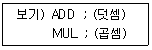
- zero-address instruction mode
- one-address instruction mode
- two-address instruction mode
- three-address instruction mode
(정답률: 54%)
25. 수치 표현에 있어서 0의 판단이 가장 쉬운 방법은?
- 2의 보수
- 1의 보수
- 부호와 절대치
- 부동 소수점
(정답률: 59%)
26. indirect cycle 동안에 컴퓨터는 무엇을 하는가?
- 명령을 읽는다.
- 오퍼랜드(operand)를 읽는다.
- 인터럽트(interrupt)를 처리한다.
- 오퍼랜드(operand)의 유효주소(address)를 읽는다.
(정답률: 50%)
27. 컴퓨터가 인터럽트 루틴을 수행한 후에 처리하는 것은?
- PC 비롯한 각종 레지스터의 배용을 스택에 보존한다.
- 인터럽트 처리 루틴의 주소를 인터럽트 벡터에서 복구시킨다.
- 인터럽트 벡터 정보를 메모리에 적재한다.
- 인터럽트 처리시 보존한 PC, PSW 등을 복구한다.
(정답률: 56%)
28. 부동 소수점 파이프라인의 비교기, 시프터, 가산-감산기, 인크리멘터, 디크리멘터가 모두 조합 회로로 구성된다. 이 때 네 세그먼트의 시간 지연이 t1=60ns, t2=70ns, t3=100ns, t4=80ns이고, 중간 레지스터의 지연이 tr=10ns라고 가정하면 비 파이프라인 구조에 비해 몇 배의 속도가 향상되는가?
- 0.6
- 1.1
- 2.4
- 2.9
(정답률: 30%)
29. 인스트럭션 실행과정에서 한 단계식 이루어지는 동작은?
- micro operation
- fetch
- control routine
- automation
(정답률: 52%)
30. 32비트와 가상 주소, 4KB 페이지, 페이지 테이블 엔트리당 4바이트로 된 페이지 테이블에 대해 전체 페이지 케이블의 크기는 얼마인가?
- 4MB
- 8MB
- 16MB
- 32MB
(정답률: 25%)
31. ASCII 코드의 비트구성은 존(zone)비트와 수(digit)비트로 구분된다. 존 bit는 몇 비트인가?
- 1비트
- 2비트
- 3비트
- 4비트
(정답률: 62%)
32. 10진수 -87을 2의 보수로 표현하면?
- (10101001)2
- (10101000)2
- (00101001)2
- (01010111)2
(정답률: 59%)
33. 프로그램 실행 중에 트랩(trap)이 발생하는 조건이 아닌 것은?
- overflow 또는 underflow 시
- 0(zero)에 의한 나눗셈
- 불법적인 명령
- 패리티 오류
(정답률: 46%)
34. 10진수 -456을 PACK 형식으로 표현한 것은?
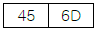
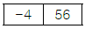
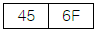
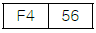
(정답률: 68%)
35. 명령인출(instruction fetch)과 수행단계(execute phase)를 중첩시켜 하나의 연산을 수행하는 구조를 갖는 처리 방식은?
- 명령 파이프라인(instruction pipeline)
- 산술 파이프라인(arithmetic pipeline)
- 실행 파이프라인(execute pipeline)
- 세그먼트 파이프라인(segment pipeline)
(정답률: 63%)
36. 연관기억(associative memory) 장치에 대한 설명 중 옳지 않은 것은?
- 고속 메모리에 속한다.
- Mapping Table 구성에 주로 사용된다.
- 주소에 의해 접근하지 않고 기억된 내용의 일부를 이용 할 수 있다.
- CPU의 속도와 메모리의 속도 차이를 줄이기 위해 사용 되는 고속 Buffer Memory이다.
(정답률: 40%)
37. 디지털 IC의 특성을 나타내는 내용 중 전달시연 시간이 가장 짧은 것부터 차례로 나열한 것으로 옳은 것은?
- ECL - MOS - CMOS - TTL
- TTL - ECL - MOS - CMOS
- ECL - TTL - CMOS - MOS
- MOS - TTL - ECL - CMOS
(정답률: 59%)
38. 다음 중 특정 비트를 반전시킬 때 사용하는 연산은?
- AND
- OR
- EX-OR
- MOVE
(정답률: 67%)
39. 10진수 -14를 2의 보수 표현법을 이용하여 8비트 레지스터에 저장하였을 때, 이를 오른쪽으로 1비트 산술 시프트 했을 때의 결과는?
- 10000111
- 00000111
- 11111001
- 01111001
(정답률: 52%)
40. 다음 중 기억장치의 설명 중 옳지 않은 것은?
- 기억장치는 주기억장치와 보조기억장치로 나눈다.
- 주기억장치는 롬과 램으로 구성할 수 있다.
- 접근방식은 직접 접근방식과 순차적 접근방식이 있다.
- 기억장치의 접근속도는 모두 일정하다.
(정답률: 71%)
3과목: 마이크로전자계산기
41. 메인루틴에서 서브루틴 종료 후 다시 메인루틴으로 돌아올 수 있는 이유는?
- 서브루틴 호출시 파라미터로 전달해 주기 때문에
- 서브루틴 호출시 CALL 명령어 다음의 메모리 주소를 누산기에 저장하기 때문에
- 서브루틴 호출시 CALL 명령어 다음의 메모리 주소를 큐에 저장하기 때문에
- 서브루틴 호출시 CALL 명령어 다음의 메모리 주소를 스택에 저장하기 때문에
(정답률: 84%)
42. 다음 중 별도의 제어기를 필요로 하는 I/O 방식은?
- DMA 방식
- Memory mapped I/O 방식
- Polled I/O 방식
- Program controlled I/O 방식
(정답률: 71%)
43. 프로그래머가 프로그램 내에서 동일한 부분을 반복하여 사용하는 불편을 없애기 위해 사용하는 프로세서는?
- Macro Processor
- Compiler
- Assemblar
- Loader
(정답률: 78%)
44. 동기식 비트 직렬 전송의 동작 순서로 옳은 것은?
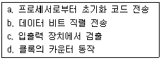
- b → a → c → d
- a → c → d → b
- a → d → b → c
- d → a → c → b
(정답률: 61%)
45. 각 데이터(data)의 끝 부분에 특별한 체크 바이트(byte)가 있어 에러(error)를 찾아내는 방법은?
- data flow check
- parity scheme check
- data conversion check
- cyclic redundancy check
(정답률: 67%)
46. IOP(Input-Output Procrssor)에 관한 내용으로 옳지 않은 것은?
- IOP는 여러 주변장치와 memory 장치 사이의 data 전송을 위한 통로를 제공한다.
- 주변장치의data 형식은 memory와 CPU의 data형식이 같기 때문에 IOP는 이를 재구성 할 필요가 없어 편리하게 data를 전송시킬 수 있다.
- CPU는 IOP 동작을 시작하게 하는 일을 맡고 있으나 CPU에 의해서 개시된 입력명령은 IOP에서 실행된다.
- data가 전송되고 있는 동안 IOP는 발생하는 모든 error의 상태를 알리는 status word를 준비한다.
(정답률: 60%)
47. 응용 프로그래머를 위해 미리 프로그램 업체에서 제공하는 작업용 프로그램을 무엇이라 하는가?
- macro
- DBMS
- library program
- monitoring program
(정답률: 73%)
48. 조건부 분기명령의 실행에서 수행되어야 할 다음 명령어를 결정하기 위해서는 어느 레지스터의 내용을 조사하는가?
- 인덱스 레지스터(Index Register)
- 상태 레지스터(Status Register)
- 명령 레지스터(lnstruction Register)
- 메모리 주소 레지스터(Memory Address Register)
(정답률: 44%)
49. 논리 블록간의 프로그램 기능 논리 교환 기능을 가진 SPLD를 근간으로 하고 있으며, 전기적 소거 및 프로그램 가능 읽기 전용 기억장치(EEPROM)나 플래시 메모리, 정적기억장치(SRAM)를 사용하는 것은?
- PAL
- CPLD
- FPGA
- ROM
(정답률: 67%)
50. 매크로(macro)의 설명과 관계없는 것은?
- 매크로는 일종의 폐쇄적 서브루틴(closed subroutine)이다.
- 매크로 호출은 매크로 이름을 통해서만 가능하다.
- 매크로는 인수 전달이 가능하다.
- 매크로 확장(macro expansion)은 언어 번역전에 행해진다.
(정답률: 37%)
51. 다음 마이크로 오퍼에이션과 관련 있는 것은? (단, EAC : 끝자리올림과 누산기, AC : 누산기)
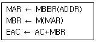
- AND
- ADD
- JMP
- BSA
(정답률: 66%)
52. 다음은 어떤 입출력 방식에 대한 설명인가?
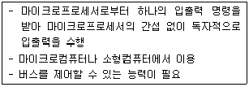
- 폴링 방식
- 플래그 검사방식
- DMA 방식
- 인터럽트 방식
(정답률: 53%)
53. RISC(Reduced Instruction Set Computer)에 대한 설명으로 틀린 것은?
- 하드웨어에서 스택을 지원한다.
- 메모리 접근 횟수를 줄이기 위해 많은 수의 레지스터를 사용한다.
- 빠른 명령어 해석을 위해 고정 명령어 길이를 사용한다.
- 비교적 전력 소모가 작기 때문에 임베디드 프로세서에도 채택되고 있다.
(정답률: 44%)
54. CPU에서 연산시 한 개의 오퍼랜드(Operand) 역할을 하고, 연산의 결과가 저장되는 레지스터는?
- 누산기(Accumulator)
- 데이터 계수기(Data Counter)
- 프로그램 계수기(Prpgram Counter)
- 명령 레지스터(Iistruction Register)
(정답률: 66%)
55. 양극성 소자(bipolar)로 만든 비트 슬라이드(bit-slice) 마이크로프로세서의 장점과 단점을 순서대로 옳게 나열한 것은?
- 고독의 집적도, 속도가 느림
- 고도의 직접도, 가격이 저렴함
- 전력소비량이 적음, 낮은 집적도
- 빠른 속도, 단일 칩으로 제작이 안 됨
(정답률: 67%)
56. 병렬 입출력 인터페이스(interface)의 특징으로 옳은 것은?
- 고속의 데이터 전송을 할 수 있다.
- 원거리 통신에 사용한다.
- 전송을 위한 회선이 적게 사용된다.
- 입력된 직렬 데이터를 병렬 데이터로 변환시켜주는 기능을 갖고 있다.
(정답률: 75%)
57. 50개의 입출력 외부 장치를 주소지정 하려고 한다. 최소 몇 개의 어드레스 선이 필요한가?
- 4개
- 5개
- 6개
- 7개
(정답률: 60%)
58. dynamic RAM과 static RAM의 설명 중 옳지 않은 것은?
- DRAM은 SRAM보다 일반적으로 기억 용량이 크다.
- DRAM은 SRAM보다 일반적으로 전력 소모가 크다.
- DRAM은 일정 시간 내에 한 번씩 refresh 해야 한다.
- DRAM은 SRAM은 모두 휘발성이다.
(정답률: 43%)
59. 자료전송 방법에 관한 설명으로 옳지 않은 것은?
- 비동기 전송에서는 문자와 문자 사이 시간 간격은 일정하지 않다.
- 비동기 전송에서는 시작 비트와 정지 비트가 필요하다.
- 동기 전송시에는 송신 측과 수신 측의 클록에 대한 동기가 필요하다.
- 동기 전송은 1200 bps(bit per second) 이하의 통신 선로에 적합하다.
(정답률: 61%)
60. 기억장치 사상 입출력(memory mapped I/O)방식에 대한 설명으로 옳은 것은?
- 입출력 전용 명령어를 사용하므로 프로그램 길이가 짧아진다.
- 입출력 장치의 개수와 상관없이 기억장치 주소 공간을 모두 사용할 수 있다.
- 프로그램에서 입출력과 기억장치 접근이 쉽게 구별된다.
- 입출력과 기억장치 접근을 구별하는 제어신호가 없다.
(정답률: 33%)
4과목: 논리회로
61. 다음 플립플롭에서 D 값이 기억되기 위한 클록 조건은?
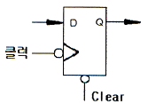
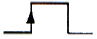
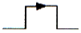
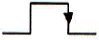
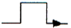
(정답률: 54%)
62. 다음 [그림]과 같은 논리회로의 명칭은?
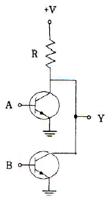
- AND
- NAND
- OR
- NOR
(정답률: 56%)
63. 오류(ERROR) 검출 방식으로 거리가 먼 것은?
- CHECK SUM
- PARITY CODE
- HAMMING CODE
- EXCESS-3 CODE
(정답률: 67%)
64. 다음 카운터의 기능은?
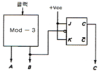
- Mod-4
- Mod-6
- Mod-8
- Mod-10
(정답률: 48%)
65. 2진수를 그레이 코드로 변환하는 회로에 들어가는 논리게이트 명칭은?
- NOR 게이트
- OR 게이트
- NAND 게이트
- EX-OR 게이트
(정답률: 70%)
66. 다음의 회로가 A2A1A0 = 011의 상태에 있다고 가정하자. 이 때 두개의 COUNT PULSE를 입력시키면 각 PULSE를 입력시키면 각 PULSE에 의해 상태가 어떻게 변화하겠는가?
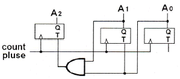
- 011→010→001
- 011→101→111
- 011→100→101
- 011→001→111
(정답률: 49%)
67. 다음 그림의 카운터는 어떠한 카운터인가?
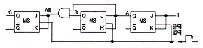
- 동기식 mod6 2진 카운터
- 동기식 mod8 2진 카운터
- 비동기식 mod5 2진 카운터
- 비동기식 mod7 2진 카운터
(정답률: 62%)
68. 다음 회로의 게이트 출력 X의 값으로 옳은 것은?
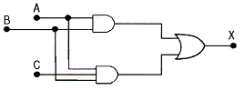
- X = AB
- X = ABC
- X = AB+BC
- X = AB+C
(정답률: 44%)
69. CMOS회로의 특징이 아닌 것은?
- 정전기에 약하여 취급에 주의하여야 한다.
- 동작 주파수가 증가하면 팬 아웃도 증가한다.
- TTL에 비하여 전력소모가 적다.
- DC 잡음 여유는 보통 전원 전압의 40% 정도이다.
(정답률: 52%)
70. 주인의 역할과 종의 역할을 하는 2개의 별개 플립플롭으로 구성된 플립플롭은?
- JK 플립플롭
- T 플립플롭
- MS 플립플롭
- D 플립플롭
(정답률: 65%)
71. 다음 그림과 같은 회로의 명칭은?
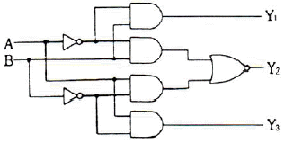
- 일치 회로
- 반일치 회로
- 다수결 회로
- 비교 회로
(정답률: 56%)
72. 다음 [그림]에서 듀티 사이클(duty cycle)은 몇 % 인가?
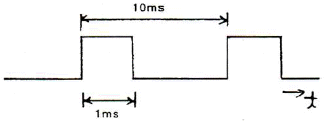
- 10
- 20
- 30
- 40
(정답률: 64%)
73. 리플 카운터의 특징이 아닌 것은?
- 비동기 카운터이다.
- 카운트 속도가 동기식 카운터에 비해 느리다.
- 최대 동작 주파수에 제한을 받지 않는다.
- 회로 구성이 간단하다.
(정답률: 38%)
74. 다음 [그림]의 회로 명칭으로 옳은 것은?
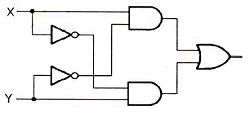
- Exclusive-NOR
- 가산기
- 감산기
- Exclusive-OR
(정답률: 49%)
75. n Bit의 코드화된 정보를 그 코드의 각 Bit 조합에 따라 2n개의 출력으로 번역하는 회로는?
- 멀티플렉서
- 인코더
- 디코더
- 디멀티플렉서
(정답률: 41%)
76. 반가산기 S(sum)의 논리식과 관계없는 것은?
- S=A'B+AB'
- S=A⊕B
- S=(A+B)(A'+B')
- S=A'+B'
(정답률: 57%)
77. 트리거 레벨에 해당하는 펄스폭의 구형파를 얻을 수 있는 것은?
- 쌍안정 멀티 바이브레이터
- 단안정 멀티 바이브레이터
- 재트리거 one-shot
- 슈미트 트리거 회로
(정답률: 69%)
78. 여러 개의 회로가 단일 회선을 공동으로 이용하여 신호를 전송하는데 필요한 장치는?
- 멀티플렉서
- 인코더
- 디코더
- 디멀티플렉서
(정답률: 53%)
79. 논리식 (A+B)(A+C)와 등가인 식은?
- AB+C
- AC+B
- A+BC
- A+B
(정답률: 50%)
80. [그림]과 같은 논리 회로와 등가적으로 동작되는 스위치 회로는?
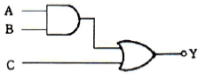
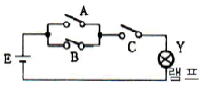
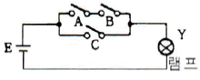
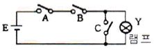
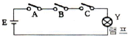
(정답률: 67%)
5과목: 데이터통신
81. 디지털 데이터를 아날로그 신호로 변조하는 방법으로만 나열된 것은?
- 위상 변조, 진폭 변조
- 주파수 변조, 시간 변조
- 진폭 편이 변조, 시간 편이 변조
- 주파수 편이 변조, 위산 편이 변조
(정답률: 45%)
82. IETF에서 고안한 IPv4에서 IPv6로 전환(천이)하는데 사용되는 전력이 아닌 것은?
- Dual stack
- Tunneling
- Header translation
- Source routing
(정답률: 58%)
83. 회선을 제어하기 위한 제어 문자 중 실제 전송할 데이터 집합의 시작임을 의미하는 것은?
- SOH
- STX
- SYN
- DCE
(정답률: 68%)
84. X.25 프로토콜에서 정의하고 있는 것은?
- 다이얼 점속(dial access)을 위한 기술
- start-stop 데이터를 위한 기술
- 데이터 비트 전송률
- DTE와 DCE 간 상호접소 및 통신절차 규칙
(정답률: 74%)
85. 토큰 패싱 방식에서 토큰에 대하여 가장 올바르게 설명한 것은?
- 데이터 통신 시 에러를 체크하기 위해 사용된다.
- 전송할 데이터를 의미한다.
- 채널 사용권을 의미한다.
- 5바이트로 구성되어 있다.
(정답률: 53%)
86. 다음 중 통신망의 체계적인 운용 및 관리를 위한 TMN(Telecommunication Management Network)의 기능 요소에 해당하지 않는 것은?
- SNL (System Network Layer)
- MNL (Network Management Layer)
- ENL (Element Management Layer)
- NEL (Network Element Layer)
(정답률: 50%)
87. OSI 7계층 데이터 링크 계층의 프로토콜로 틀린 것은?
- HTTP
- HDLC
- PPP
- LLC
(정답률: 58%)
88. 다수의 타임 슬롯으로 하나의 프레이밍 구성되고, 각 타임 슬롯에 채널을 할당하여 다중화하는 것은?
- TDM
- CDM
- FDM
- CSM
(정답률: 64%)
89. 인터넷 상의 서버와 클라이언트 사이의 멀티미디어를 송수신하기 위한 프로토콜과 웹문서를 작성하기 위해 사용하는 언어를 순서대로 바르게 나열한 것은?
- URI, URL
- HTTP, MHS
- HTTP, HTML
- WWW. HTTP
(정답률: 72%)
90. 수신측에서 수신된 데이터에 대한 확인(Acknowledgement)을 즉시 보내지 않고 전송할 데이터가 있는 경우에만, 제어 프레임을 별도로 사용하지 않고 전송할 데이터가 있는 경우에만 데이터 프레임에 확인 필드를 덧붙여 전송하는 흐름제어 방식은?
- Stop and wait
- Sliding Window
- Piggyback
- Polling
(정답률: 49%)
91. 다음이 설명하고 있는 에러 검출 방식은?
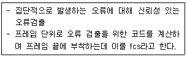
- Cyclic Redundancy Check
- Hamming Code
- Parity Check
- Block Sum Check
(정답률: 67%)
92. 하나의 통신채널을 이용하여 데이터의 송신과 수신이 교번식으로 가능한 통신방식은?
- 반이중 통신
- 전이중 통신
- 단방향 통신
- 시분할 통신
(정답률: 71%)
93. 매체 접근 제어 방식 중 CSMA/CD와 토큰 패싱(Token Passing)에 대한 설명으로 틀린 것은?
- CSMA/CD는 버스 또는 트리 토폴로지에서 가장 많이 사용되는 기법이다.
- 토큰 패싱은 토큰을 분실할 가능성이 있다.
- 토큰 패싱은 노드가 증가하면 성능이 좋아진다.
- CSMA/CD는 비경쟁 기법의 단점인 대기시간의 상당부분이 제거될 수 있다.
(정답률: 61%)
94. RTCP(Real-Time Control Protocol)의 특징으로 틀린 것은?
- Session의 모든 참여자에게는 컨트롤 패킷을 주기적으로 전송한다.
- 데이터 분배에 대한 피드백을 제공하지 않는다.
- 하위 프로토콜은 데이터 패킷과 컨트롤 패킷의 멀티 플랙싱을 제공한다.
- 데이터 전송을 모니터링하고 최소한의 제어와 인증기능만을 제공한다.
(정답률: 40%)
95. 대역폭(bandwidth)에 대한 설명으로 옳은 것은?
- 최고 주파수를 의미한다.
- 최저 주파수를 의미한다.
- 최고 주파수의 절반을 의미한다.
- 최고 주파수와 최저 주파수 사이 간격을 의미한다.
(정답률: 82%)
96. 데이터 통신에서 동기 전송 방식에 대한 설명으로 틀린 것은?
- 문자 또는 비트들의 데이터 블록을 송수신한다.
- 전송데이터와 제어정보를 합쳐서 레코드라 한다.
- 수신기가 데이터 블록의 시작과 끝을 정확히 인식하기 위한 프레임 레벨의 동기화가 요구된다.
- 문자위주와 비트위주 동기식 전송으로 구분된다.
(정답률: 35%)
97. 데이터 전송제어 절차가 순서대로 올바르게 나열된 것은?
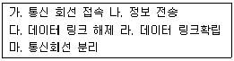
- 가→라→나→다→마
- 마→가→나→라→다
- 가→나→다→라→마
- 라→나→가→다→마
(정답률: 87%)
98. HDLC 프레임 구조 중 헤더를 구성하는 플래그(flag)에 대한 설명으로 틀린 것은?
- 프레임의 최종 목적 주소를 나타낸다.
- 동기화에 사용된다.
- 프레임의 시작과 끝을 표시한다.
- 항상 01111110의 형식을 취한다.
(정답률: 55%)
99. 송신 스테이션 데이터 프레임을 연속적으로 전송해나가다가 NAK를 수신하게 되면 에러가 발생한 프레임을 포함하여 그 이후에 전송된 모든 데이터 프레임을 재전송하는 방식은?
- Stop-and-wait ARQ
- Go-back-N ARQ
- Selective-Repeat ARQ
- Non Selective-Repeat ARQ
(정답률: 70%)
100. OSI 7계층 중 통신망을 통한 목적지까지 패킷 전달을 담당하는 계층은?
- 데이터링크 계층
- 네트워크 계층
- 전송 계층
- 표현 계층
(정답률: 38%)